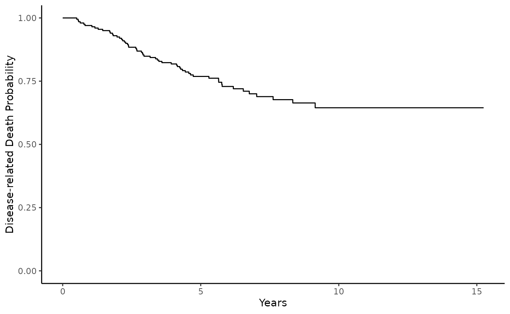

Cure Model Analysis Example
cure-model-analysis-example.RmdIntroduction
{cureit} allows you to easily build and report mixture cure models. Functions are available to fit, diagnose, and visualize your cure model results. More information on theory and application of cure models using {cureit} in the supporting manuscript:
Whiting K, Fei T, Singer S, Qin, LX. Cureit: An End-to-End Pipeline for Implementing Mixture Cure Models With an Application to Liposarcoma Data. JCO Clin Cancer Inform 8, e2300234(2024).DOI:10.1200/CCI.23.00234
Example data set
We will be using publicly available data on 205 stage I melanoma
patients at the Department of Plastic Surgery, University Hospital of
Odense, Denmark from 1962 to 1977. The original data is available in the
{ISwR} package (ISwR::melanom, Dalgaard, 2008). A version
of this data is available in the cureit package
cureit::melanoma.
Variables include:
-
ulceration: ulceration status -
tumor_thickness: tumor thickness in mm -
sex: sex
The main available variables in this data set are summarized below using the {gtsummary} package:
| Characteristic | N = 2051 |
|---|---|
| Tumor Thickness | |
| ≤ 129 | 77 (38%) |
| > 129 & ≤ 322 | 68 (33%) |
| > 322 | 60 (29%) |
| Sex | |
| Female | 126 (61%) |
| Male | 79 (39%) |
| Ulceration | 90 (44%) |
| 1 n (%) | |
To calculate overall survival, we will only consider death from melanoma as an event. Patients who died from other cause or were lost to follow-up are censored.
Disease death outcome data is plotted and summarized below using the {ggsurvfit} package and {gtsummary}:
fit <- survfit(Surv(years, status) ~ 1, data = melanoma)
fit %>%
ggsurvfit::ggsurvfit() +
ylab("Disease-related Death Probability")+
xlab("Years") +
ylim(0, 1) +
theme_classic()
From the Kaplan-meier curves we can see the disease death rate plateaus around .7, indicating that not all patients may experience disease-related death. The patients that do experience this event, may have different clinical charcteristics from those who do not. Cure models can help characterize the contribution of clinical variables to these potentially heterogeneous sub-cohorts.
Fitting the Cure Model
The cureit() function is a wrapper for
smcure::smcure() and allows you to fit cure models and
estimate coefficients and confidence intervals (via bootstrapping).
Results can be summarized and organized using a tidy framework (see
{broom} package for more information). Below, we will fit a cure model
using ulceration status, sex and tumor thickness as variables of
interest in both cure and survival portions.
Note: You can optionally provide different sets of covariates to the survival portion and the cure portion:
fit <- cureit(
surv_formula = Surv(days, status) ~ ulceration + sex + tumor_thickness,
cure_formula = ~ ulceration + sex + tumor_thickness, data = melanoma
)
#> Warning: 0 of 100 did not converge.Producing Table Summary of the Cure Model
A tidy method is available to turn model estimates into a data frame of model info.
tidy(fit)
#> # A tibble: 9 × 5
#> term estimate std.error statistic p.value
#> <chr> <dbl> <dbl> <dbl> <dbl>
#> 1 (Intercept), Cure model -2.25 0.563 -4.00 0.0000636
#> 2 ulceration_yes, Cure model 1.25 0.472 2.64 0.00818
#> 3 sex_male, Cure model 0.283 0.488 0.579 0.562
#> 4 tumor_thickness_129_322, Cure model 1.34 0.584 2.30 0.0217
#> 5 tumor_thickness_322, Cure model 1.38 0.685 2.01 0.0441
#> 6 ulceration_yes, Survival model -0.167 0.448 -0.373 0.709
#> 7 sex_male, Survival model 0.443 0.443 1.00 0.317
#> 8 tumor_thickness_129_322, Survival model 0.120 0.542 0.221 0.825
#> 9 tumor_thickness_322, Survival model 1.37 0.758 1.81 0.0707Additionally, you can extract tidy fits of both sub models separately as well:
# cure model tidy table
fit$tidy$df_cure
#> # A tibble: 5 × 7
#> term estimate std.error statistic conf.low conf.high p.value
#> <chr> <dbl> <dbl> <dbl> <dbl> <dbl> <dbl>
#> 1 (Intercept), Cure mod… -2.25 0.563 -4.00 -3.35 -1.15 6.36e-5
#> 2 ulceration_yes, Cure … 1.25 0.472 2.64 0.323 2.17 8.18e-3
#> 3 sex_male, Cure model 0.283 0.488 0.579 -0.674 1.24 5.62e-1
#> 4 tumor_thickness_129_3… 1.34 0.584 2.30 0.196 2.49 2.17e-2
#> 5 tumor_thickness_322, … 1.38 0.685 2.01 0.0363 2.72 4.41e-2
# survival model tidy table
fit$tidy$df_surv
#> # A tibble: 4 × 7
#> term estimate std.error statistic conf.low conf.high p.value
#> <chr> <dbl> <dbl> <dbl> <dbl> <dbl> <dbl>
#> 1 ulceration_yes, Survi… -0.167 0.448 -0.373 -1.05 0.711 0.709
#> 2 sex_male, Survival mo… 0.443 0.443 1.00 -0.425 1.31 0.317
#> 3 tumor_thickness_129_3… 0.120 0.542 0.221 -0.942 1.18 0.825
#> 4 tumor_thickness_322, … 1.37 0.758 1.81 -0.116 2.85 0.0707A basic gtsummary::tbl_summary() method for
cureit model objects is also available (please
note: this is experimental and will be updated soon to include improved
formatting of submodel components):
tbl_regression(fit, exponentiate = TRUE) %>%
bold_labels() %>%
bold_p()| Characteristic | exp(Beta) | 95% CI1 | p-value |
|---|---|---|---|
| (Intercept), Cure model | 0.11 | 0.03, 0.32 | |
| ulceration_yes, Cure model | 3.48 | 1.38, 8.78 | 0.008 |
| sex_male, Cure model | 1.33 | 0.51, 3.46 | 0.6 |
| tumor_thickness_129_322, Cure model | 3.83 | 1.22, 12.0 | 0.022 |
| tumor_thickness_322, Cure model | 3.97 | 1.04, 15.2 | 0.044 |
| ulceration_yes, Survival model | 0.85 | 0.35, 2.04 | 0.7 |
| sex_male, Survival model | 1.56 | 0.65, 3.71 | 0.3 |
| tumor_thickness_129_322, Survival model | 1.13 | 0.39, 3.26 | 0.8 |
| tumor_thickness_322, Survival model | 3.93 | 0.89, 17.4 | 0.071 |
| 1 CI = Confidence Interval | |||
Model Prediction
Make predictions on cureit model:
p <- cureit(Surv(days, status) ~ ulceration + sex + tumor_thickness,
cure_formula = ~ ulceration + sex + tumor_thickness,
data = melanoma)
#> Warning: 0 of 100 did not converge.
x <- predict(p, times = seq(100, 5000, 100), newdata = melanoma, brier = TRUE)
# names of lists that can be extracted from x
names(x)
#> [1] "cured" "surv_uncured" "surv_marginal" "brier"